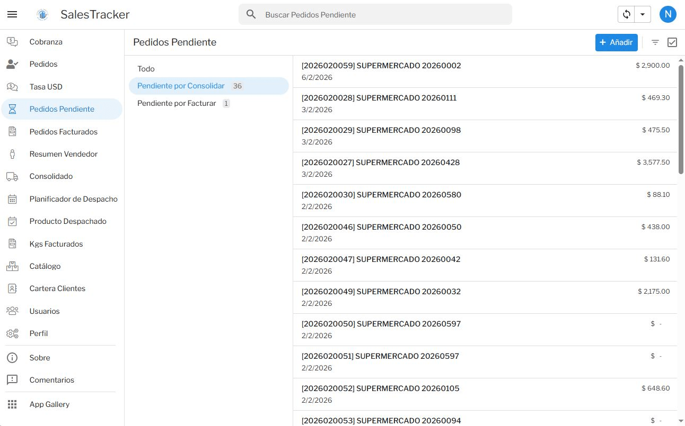

Deja de perder clientes por pedidos traspapelados y recupera el control de tu calle.
SINAI sincroniza tus ventas en tiempo real, tu pesaje físico en kilogramos y tus rutas de despacho directamente sobre la nube de Google Workspace y AppSheet. Sin licencias abusivas por usuario.
- ✔ Preventa móvil con geolocalización y toma offline.
- ✔ Bloqueo de facturación por descuadre físico de kilos.
- ✔ Caja multidivisa (USD y moneda local) con soporte fotográfico.

¿Cuánto dinero pierde tu distribuidora en la calle?
Notas en papel, capturas de transferencias y la memoria de los vendedores destruyen tus márgenes.
Pedidos perdidos
EL CLIENTE SE VA A LA COMPETENCIA
La orden quedó olvidada en WhatsApp, planta nunca preparó la carga y el cliente recibió la mercancía tarde o incompleta.
Fuga de cartera
EL CHOFER QUE RENUNCIA
Al irse un vendedor o chofer, se lleva coordenadas, acuerdos de crédito y contactos guardados en su teléfono personal.
Mermas y kilos regalados
DESCUADRE DE BÁSCULA
Diferencias entre el pedido estimado y el pesaje real de carga que provocan pérdidas de dinero o reclamos de clientes.
Cobranza a ciegas
PAGOS SIN CONCILIAR
Despachos autorizados sin verificar transferencias bancarias o con tasas de cambio no supervisadas por tesorería.
Circuito Operativo: Order-to-Cash
Un flujo integrado desde la visita comercial hasta el banco.
La Infraestructura de Google Workspace al servicio de tu Fuerza de Ventas
Convierte las herramientas de Google que ya pagas en una infraestructura empresarial de clase mundial.
Bóveda Documental
Archiva RIFs, comprobantes y permisos (SICA/SUNAGRO) en Google Drive corporativo.
Gmail Corporativo
Envía cotizaciones y notas de entrega en PDF desde tu dominio institucional (@tuempresa.com).
Apps Script Bot
Conciliación automática de montos, avisos de cobro y actualización diaria de tasas cambiarias.
Soberanía de Datos
Si un teléfono se pierde en ruta, la información está blindada y los accesos se revocan en un clic.
Mira a SINAI en Acción
Demostración en video del circuito completo: preventa móvil, pesaje y conciliación.
Implementación Estratégica SINAI
Modelos de despliegue diseñados por consultores de Gammaliel Analytics.
Auditoría & Despliegue Express
Ideal para distribuidoras que necesitan ordenar la preventa y su catálogo de clientes.
- ✔ Módulo CRM y geolocalización de clientes.
- ✔ Toma de pedidos móvil para vendedores.
- ✔ Configuración de carpetas en Google Drive.
- ✔ Capacitación audiovisual para el equipo.
Ecosistema SINAI Cloud
Para distribuidoras que requieren circuito cerrado: pedidos, báscula y bancos.
- ★ Circuito Order-to-Cash completo.
- ✔ Control de facturación por pesaje en kilos.
- ✔ Consolidador de rutas y despacho logístico.
- ✔ Tesorería multidivisa y conciliación fotográfica.
- ✔ Despliegue de dominio corporativo Google Workspace.
Solución a Medida & BI
Integración con ERPs legados, plantas agroindustriales y tableros en Power BI.
- ✔ Integración con sistemas contables existentes.
- ✔ Tableros ejecutivos en Power BI / Looker Studio.
- ✔ Auditoría In-situ de procesos Order-to-Cash.
- ✔ Soporte y consultoría continua.
Preguntas Frecuentes
¿Necesito comprar un servidor o contratar licencias de software complejas?
No. SINAI funciona sobre la arquitectura cloud de Google Workspace. Solo requieres tus cuentas de Google corporativas para desplegar la solución en computadoras, tabletas y teléfonos celulares de tu equipo.
¿Qué pasa si mi empresa no tiene Google Workspace actualmente?
En Gammaliel Analytics te asesoramos en el despliegue de tu dominio corporativo oficial y la activación del entorno de Google, habilitando tu negocio con herramientas institucionales desde el primer día.
¿Cómo ayuda SINAI si mis productos se venden por peso y varían en el despacho?
Ese es el núcleo de SINAI. El sistema traduce las órdenes comerciales en requerimientos de producción por kilos y bloquea la facturación administrativa si no hay concordancia exacta con el pesaje físico confirmado en báscula.
¿Nuestra cartera de clientes queda protegida si renuncia un chofer o vendedor?
Totalmente. La base de datos, el historial de precios, las rutas y los expedientes residen en la cuenta institucional de tu empresa. Al revocar el usuario, la información permanece 100% resguardada en el negocio.
¿Listo para transformar la distribución de tu empresa?
Elimina pedidos traspapelados y recupera la rentabilidad de cada kilo despachado.
Agendar Diagnóstico Operativo